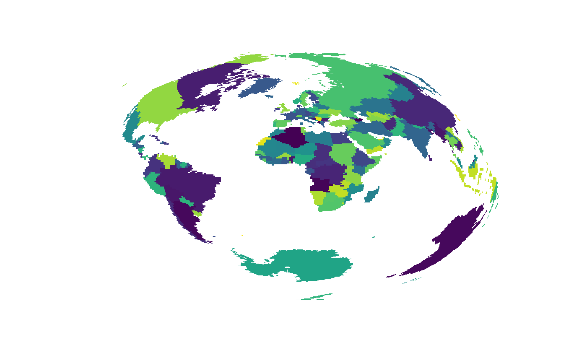
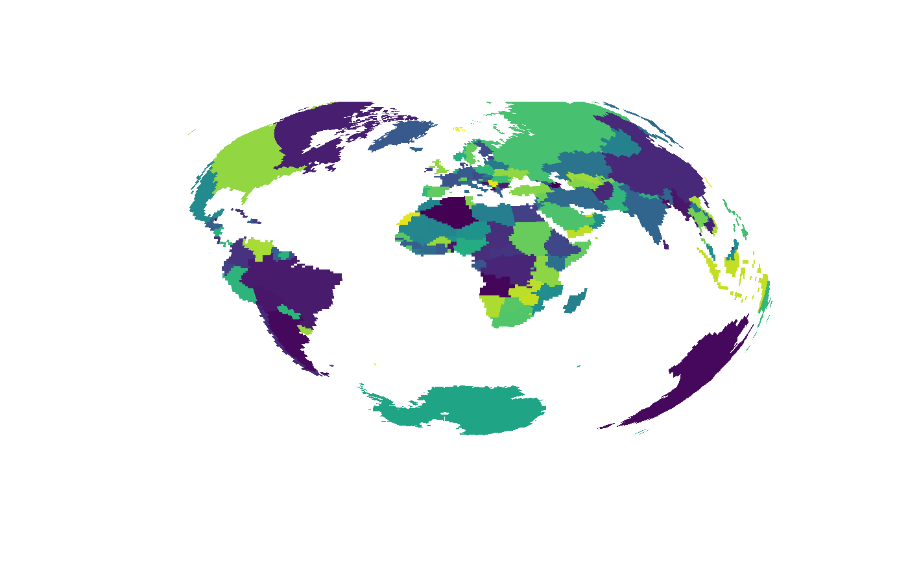
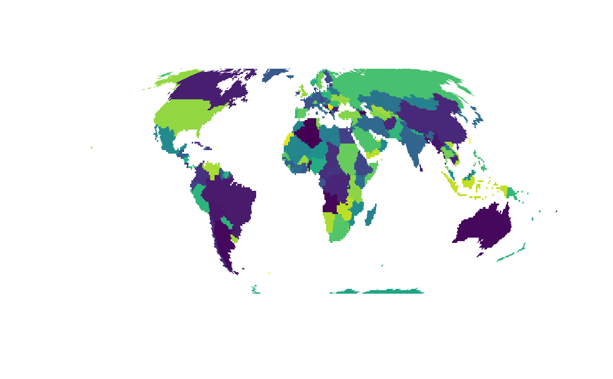
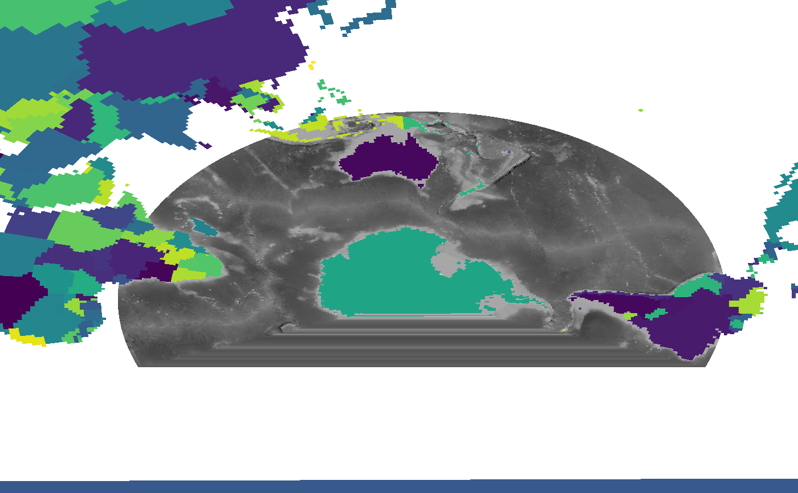

Convert to a quadmesh and plot in efficient vectorized form using 'grid'.
mesh_plot(x, crs = NULL, colfun = NULL, add = FALSE, ..., coords = NULL) # S3 method for BasicRaster mesh_plot(x, crs = NULL, colfun = NULL, add = FALSE, ..., coords = NULL) # S3 method for RasterLayer mesh_plot(x, crs = NULL, colfun = NULL, add = FALSE, ..., coords = NULL)
| x | object to convert to mesh and plot |
|---|---|
| crs | target map projection |
| colfun | colour function to use, `viridis` is the default |
| add | add to existing plot or start a new one |
| ... | ignored |
| coords | optional input raster of coordinates of each cell, see details |
nothing, used for the side-effect of creating or adding to a plot
The mesh may be reprojected prior to plotting using the 'crs' argument to define the target map projection in 'PROJ string' format. (There is no "reproject" function for quadmesh, this is performed directly on the x-y coordinates of the 'quadmesh' output). The 'colfun' argument is used to generate colours which are mapped to the input object data as in 'image'.
If `coords` is supplied, it is currently assumed to be a 2-layer `RasterBrick` with longitude and latitude as the *cell values*. These are used to geographically locate the resulting mesh, and will be transformed to the `crs` if that is supplied. This is modelled on the approach to curvilinear grid data used in the `angstroms` package. There the function `angstroms::romsmap` and `angstroms::romscoords` are used to separate the complicated grid geometry from the grid data itself. A small fudge is applied to extend the coordinates by 1 cell to avoid losing any data due to the half cell outer margin (get in touch if this causes problems!).
mesh_plot(worldll)## crop otherwise out of bounds from PROJ mesh_plot(raster::crop(worldll, raster::extent(-179, 179, -89, 89)), crs = "+proj=laea")mesh_plot(worldll, crs = "+proj=moll")prj <- "+proj=lcc +datum=WGS84 +lon_0=147 +lat_0=-40 +lat_1=-55 +lat_2=-20" mesh_plot(etopo, crs = prj, add = FALSE, colfun = function(n = 20) grey(seq(0, 1, length = n)))mesh_plot(worldll, crs = prj, add = TRUE)